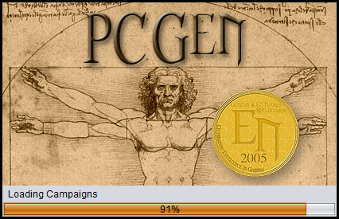

Whether you use pcgen.exe or pcgen.jar to start up PCGen, the first thing you will see is the splash screen with Da Vinci's Vitruvian Man logo and the words PCGen written above it.

From there, PCGen will load and take you to the Source Material Screen where you can get started making your characters!
With the release of PCGen 5.17.11 PCGen added a new Command Line Interface . To access the new command line interface you will use your computer's Terminal program/application just as you would for any command line interface. You will also need to change the current directory to the pcgen directory.
The features included with the new Command Line interface are as follows:
Command Syntax: pcgen [-G] [-V] [-D [<character_sheet>]] [-v] [-s <settings_dir>] [-m <campaign>] [-p <party_file>] [-c <character_file>] [-E [<character_sheet>]]
Option: -V (Print Version and exit)
Option: -G (Start in GMGen Mode)
Option: -D <character_sheet> (Start in Character Sheet Mode. Will use default character sheet if not specified.)
Option: -v (Set Logging Level to debug)
Option: -s <settings directory> (Use alternate settings directory instead of the default)
Option: -m <campaign mode> (Load specified Campaign)
Option: -o <file name> (Output to specified file. If not specified a default file name will be generated.)
Option: -p <party file> (Loaded specified PCGen Party)
Option: -c <character file> (Loaded specified PCGen Character)
Option: -E <character sheet> (Export character or party and exit. Will use default character sheet if not specified.)
What it does:
Example:
pcgen -E
outputsheets/d20/fantasy/pdf/csheet_fantasy_std_blue.xslt -c
"characters/Test Bard.pcg"
Output the character characters/Test Bard.pcg to a PDF file using the csheet_fantasy_std_blue.xslt sheet .
pcgen -E
outputsheets/d20/fantasy/htmlxml/psheet_fantasy_std_PFRPG.htm -p
"characters/The Testers.pcp"
Output the listed party to html.
pcgen -v -m "Pathfinder RPG for Players -
Advanced"
Startup with debug logging and load the Pathfinder RPG for Players - Advanced set.
Linux System Example:
pcgen.sh -- -v -m "Pathfinder RPG for
Players - Advanced"
Startup with debug logging and load the Pathfinder RPG for Players - Advanced set.